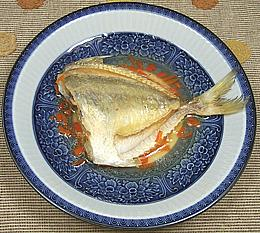

These tropical Indo-Pacific fish is found from the east coast of Africa to the Pacific Islands, as far south as the north coast of Australia, and as far north as Japan. The fish get their name from their strange extensible mouths, which look like a pony's nose when extended.
The Striped Pony Fish (photo) can grow to 8 inches and the Common to 11 inches, but the photo specimen was 8 inches and weighed 5-3/4 oz, caught wild off Thailand. Living near river mouths and in mangrove areas they are both caught wild and farmed, and sold both fresh and dried. They have no scales I could find so are probably not kosher, but they're IUCN Red Listed LC (Least Concern).
More on Varieties of Fish
(very large page).
 Pony Fish flesh is medium in flavor and stays fairly firm when cooked. This fish is very bony, but the bones are mostly fused together at the fin bases so it's not real hard to eat. A 9 oz Pony Fish will yield about 4 oz of edible flesh (44%). The skin shrinks severely when cooked, so If you steam this fish whole, the body skin comes off in shreds, and since the whole head end is just skin over bone, it comes apart and looks really ugly. Not recommended.
My favorite way to eat these is to cut off the head behind the collar (which makes cleaning very easy), lightly dust them with rice flour and pan fry them - then pour a little lemon butter sauce over and eat them off the bones. That's most easily done with chopsticks, which is how I always eat fish. The fillets come clean off the skeleton and the only bones you have to deal with are a very few long thin ribs up at the front. Not too much trouble at all, and when they're on sale for 2006 U.S. $0.99/# at a Philippine fish market, why not?
sf_ponyz 060704 - www.clovegarden.com